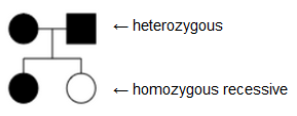
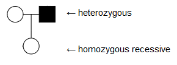

Pedigree

Figure 1: A Pedigree Chart
A pedigree chart is used to identify how a trait or a disease is passed on to the next generation in a family. By graphing the presence or absence of the trait in every individual of the family, it will be easier to identify if the trait is dominant or recessive. This will then make it easier to predict the offsprings of the current generation. Other than that, a thorough analysis of certain pedigrees can reveal if a trait is dominant, recessive, autosomal, or sex-linked but we will focus on pedigrees based on autosomal traits.
How to read a pedigree
The most basic symbols in a pedigree are:
- Square - Male
- Circle - Female
- Unshaded - Unaffected
- Shaded - Affected
Other than that, the other significant figures in a basic pedigree include the marriage line, sibling line, and line of descent. For our pedigree generator, we will only make use of the symbols mentioned above.
How to determine if a trait is dominant or recessive

Figure 3: Heterozygous Parents with a Homozygous Recessive Offspring\
If a trait is dominant, at least one of the parents must have it in order for it to be passed on to the next generation. If a trait is recessive however, it is passed on if both parents have at least one recessive allele. That is, each parent is either heterozygous or homozygous recessive.
Using the logic mentioned above, we can be sure that if a couple with the same phenotype had an offspring with a different phenotype, the phenotype of the offspring will always be the recessive one and that both of the parents are heterozygous. The reason behind this is that if the parents had the recessive phenotype, it is ensured that all of their offspring will also have the recessive phenotype which cannot be the case.

Figure 4: A Heterozygous Parent with a Homozygous Recessive Offspring
If you have already determined the dominant phenotype using the technique above, there is another one that can be applied. Since a child with a recessive phenotype needs two recessive alleles, it can be concluded that both of the parents will always have at least one recessive allele so if the parent shows a dominant phenotype, his or her genotype will always be heterozygous.

Figure 5: A Homozygous recessive parent with a heterozygous offspring
If a child with a dominant phenotype has a parent who has a recessive phenotype, we can be sure that the child is heterozygous since one parent would only be able to give a recessive allele.
Other than the techniques mentioned above, it would more likely be trial and error for the rest of the pedigree especially since we’ll be focusing on pedigrees based on autosomal traits only.
Pedigree ID
A pedigree ID or a pedigree identifier makes it easier to find or isolate an individual within a pedigree. A pedigree ID is based on the individual’s generation and his or her placement within the generation. For example, in this pedigree, the grandmother's pedigree ID is I-2 since she is the 2nd individual in the 1st generation. On the other hand, her only biological son has a pedigree ID of II-3, as he is the 3rd individual in the 2nd generation.
That’s it for the background information, so click here to go to the pedigree generator and practice your skills!
References: